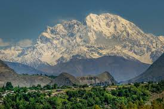

<div class="portfolio-single-load clearfix">
    <div class="custom-full-width-box">
        <div class="custom-container">
            <div class="custom-row align-items-center">
                <div class="custom-image-column">
                    
                </div>
                <div class="custom-text-column">
                    <h2 class="custom-heading">Tirich Mir</h2>
                    <p class="custom-paragraph">
                        
                        Terich Mir, the highest peak in the Hindukush Mountain Range, stands majestically in the Chitral district of Khyber Pakhtunkhwa province. With an elevation of 7690 meters, this glorious "mountain of darkness" offers a spectacular sight for adventurers and nature lovers alike.
                        <br><br>
                        The unique structure of Terich Mir, surrounded by glaciers and mountain ranges, forms a horseshoe-like configuration. The lower Terich Glacier extends to create the magnificent Terich Concordia, featuring seven sub-valleys of glaciers. This awe-inspiring natural wonder attracts trekkers and explorers from around the world, offering an unforgettable adventure in the heart of Pakistan's wilderness. The region is predominantly inhabited by Sunni Muslims, with a minority population of Kalash people practicing their ancient polytheistic faith and speaking the Kalasha language.
                        

                    </p>
                </div>
            </div>
        </div>
    </div><!-- .custom-full-width-box end -->

</div><!-- end single-project -->
